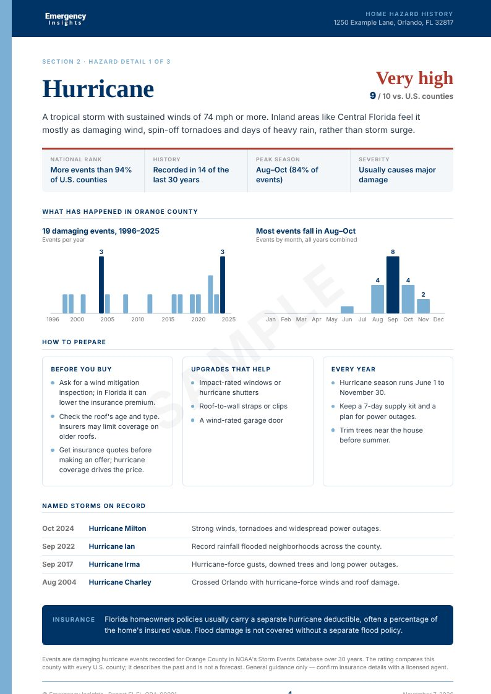
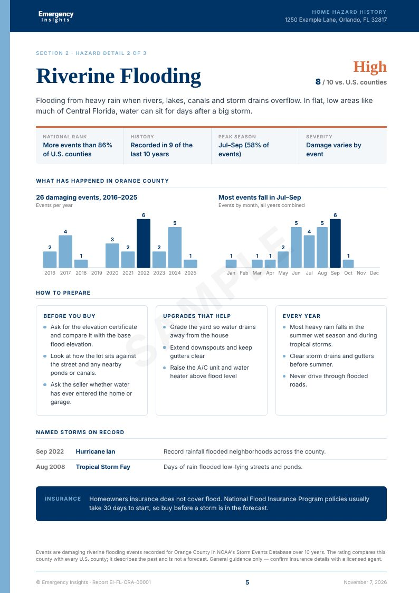

Home hazard history reports
Know what your home has been through.
Thinking of buying, about to rent, or living there for years: enter an address and get a plain-English report of every natural hazard recorded there — hurricanes, floods, wind and 15 more — compared with the rest of the U.S.
History, not a forecast. Built on public NOAA and FEMA records.
Why it matters
If your street floods every hurricane, you should know it.
Hazard data is public, but it is scattered across federal databases and hard to read. Listings and leases rarely mention it, so most people learn a home's history the hard way.
Whether you're choosing a place or have lived there for years, Emergency Insights pulls those records together for one address and explains them in plain language: what has happened there, and how often compared with the rest of the country.
What's in a report
A short PDF anyone can read in ten minutes.
Hazard summary
All 18 FEMA hazards ranked against every U.S. county, with the ones that stand out up front.

This property
The home's FEMA flood zone, flood claims nearby, major storms on record, and what to check.

Hazard details
For each hazard that stands out: when it happens, how severe it gets, and its full record.
How it works
Three steps, about a minute.
1
Enter the address
Confirm the property on a satellite view so the report is for the right home.
2
We pull the records
Storm events, flood claims and flood zones from NOAA, FEMA and USGS, matched to that location.
3
Get your PDF
Download it, print it, or send it to your agent, inspector, landlord or family.
Live reports are on the way.
We're finishing the data behind the reports. Join the waitlist and we'll let you know when you can check your own address.
- 1. Address
- 2. Confirm and preview
- 3. Get your PDF
Which home do you want to check?
Enter the address, then tell us whether you're buying, renting, or already living there. The report changes to fit.
Is this the right home?
Change addressYou searched for your address.
Satellite view of the property
1250 Example Lane
Orlando, FL 32817 · Orange County
Free preview
3 hazards stand out at this address
The full report adds every hazard's history, when each one tends to hit, the major storms on record and a checklist.
Real NOAA records, ranked against every U.S. county.
Your full report
Includes a Know Before You Buy page with a before-you-sign checklist.
Free while we test the prototype.
Preview every page
Sample report
Every page of a real report, for a sample address.
This is the report for a fictional home in Orlando, Florida. The storm names and dates are real; the counts and ratings are sample data while we finish the live version.



Hazard guide
The 18 natural hazards in every report.
These are the hazards FEMA tracks in its National Risk Index. Every report checks all 18 for the address, even the ones that have never been recorded there.
How each hazard is rated
We count the damaging events recorded in the county, per square mile, then rank the county against every U.S. county for that hazard alone. Common hazards use 10 years of records; rare ones use 30.
| Rating | Number | Meaning |
|---|---|---|
| Very high | 9–10 | More recorded events than 90–100% of U.S. counties |
| High | 7–8 | More than 70–89% of U.S. counties |
| Moderate | 4–6 | More than 40–69% of U.S. counties |
| Low | 2–3 | More than 20–39% of U.S. counties |
| Very low | 1 | Recorded, but less than most counties |
| Not recorded | 0 | No damaging events in the record window |
A rating describes the past. A 9 means this place has been unusual for that hazard, not that there is a 90% chance of it next year.
For professionals
Built to sit beside the inspection, not replace it.
Give clients the part of the picture a walk-through can't show: what the area has lived through.
Home inspectors
Add a hazard history report to every inspection, with your name on the cover.
Buyer's agents
Hand clients a report they can actually read before they make an offer.
Listing agents
Homes with a quiet history can show it, with a link to the full report.
Single report
[YOUR PRICE]
One address, full PDF, yours to share with the client.
Professional
[YOUR PRICE] / month
Reports for every client, branded with your business.
Our story
It started with a flooded condo near campus.
[YOUR STORY — the UCF condo that flooded, who lived there, and what they wished they had known before signing.]
Emergency Insights began as a student team project at UCF [CONFIRM: team, NASA connection]. The idea placed third at [COMPETITION NAME], where the judges asked the question that shaped everything after: if it isn't a prediction, what exactly are you rating?
[YOUR PROFESSOR OR MENTOR QUOTE]
The team
Javier Rocha
Co-founder · website and reports
[ONE LINE ABOUT YOU]
[NAME]
[ROLE]
[ONE LINE]
[NAME]
[ROLE]
[ONE LINE]
FAQ
Common questions
Is this a prediction?
No. Every rating describes events that have already been recorded. It tells you how unusual a place has been for each hazard, not what will happen next.
Where does the data come from?
Public U.S. government records: NOAA's Storm Events Database, FEMA flood insurance claims and flood maps, FEMA's National Risk Index and the USGS earthquake catalog. Every report lists its sources.
I already live in my home. Is this useful for me?
Yes. The report works the same for owners and renters who have lived somewhere for years. Many people only learn their area's history after a storm.
Does it replace an inspection or an insurance quote?
No. It adds what an inspection can't see, the area's history, and helps you know which questions to ask your inspector, landlord or insurance agent.
How local is the information?
The flood zone is for the property itself and flood claims are for its census tract. Most weather records are kept by county, so those ratings describe the wider area.
Which areas do you cover?
[YOUR COVERAGE — for example, starting with Orange County, Florida.]
Contact
Join the waitlist or get in touch.
We'll email you once when live reports are ready for your area. Inspectors and agents: tell us a little about your business and we'll reach out.
[YOUR EMAIL]Test lab · prototype
Watch a report get built.
Pick a place and press Build. The page runs the same four steps the real system will: find the address, look up its numbers in the database, write the data file, and fill the report templates.
Turns the address into a county, a census tract, coordinates and a flood zone. Real version: Census geocoder and FEMA flood maps.
Waiting
See the result
Reads the county's 18 hazard rows, the tract's flood claims and the storms on record. Real version: the small database built once a year.
Waiting
See the rows
Ranks each hazard, picks the headline and checklist, and writes everything the report needs into one file.
Waiting
See the data file
Pours the data file into the page templates: cover, summary, property page, one page per standout hazard, closing page.
Waiting
The report
See the whole database
Privacy and terms
Privacy and terms
Draft placeholder. Before taking addresses, emails or payments, these pages need real policies. A lawyer or a reputable policy generator is the right source.
What we plan to cover
What information we collect (the address you search, your email if you join the waitlist), how it's used, how long it's kept, that we don't sell it, and how to ask us to delete it.
The terms will state that reports summarize public historical records for general information only, are not predictions, inspections, appraisals or insurance quotes, and that Emergency Insights is not affiliated with NOAA, FEMA, USGS or NASA.